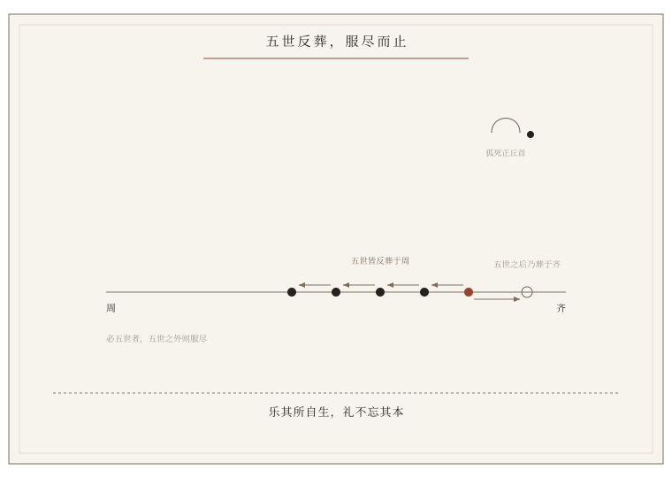

檀弓上 · 三·二十六 · 第 229 课
大公封于营丘，比及五世，皆反葬于周。君子曰「乐，乐其所自生；礼，不忘其本」；又引古人之言「狐死正丘首，仁也」。注「五世之后，乃葬于齐」「仁，恩也」。
说什么事：死在封国，葬回王城，五世而后已。
落在哪一层：礼，兼及礼意与史。论「不忘其本」。
为何编在此位：卷七开篇即此节，檀弓上入齐、周之论。前卷论一身之丧，此卷多论一族、一国之事。
【经】大公封於營丘，比及五世，皆反葬於周。君子曰：「樂，樂其所自生。禮，不忘其本。古之人有言曰：『狐死正丘首。』仁也。」
【注】齊大公受封，留為大師，死葬於周，子孫生焉，不忍離也。五世之後，乃葬於齊，齊曰營丘。言其似禮樂之義。正丘首，正首丘也。仁，恩也。
【疏】此一节论忠臣不欲离王室之事。大公封于营丘，及其死也，反葬于镐京，陪文武之墓；其大公子孙，比及五世，虽死于齐，以大公在周，皆反葬于周。言「反葬」者，既从周乡齐，今又从齐反往归周。「乐其所自生」者，谓先王制乐，爱乐己之王业所由生，以制乐名：若舜爱乐其王业所由能绍尧之德，即乐名《大韶》；禹爱乐其治水广大中国，则乐名《大夏》。「礼，不忘其本」者，谓王业根本由质而兴则制礼尚质，由文而兴则制礼尚文。礼之与乐皆是重本，今反葬于周亦是重本，故引礼乐以美之。「狐死正丘首」者，丘是狐窟穴根本之处，虽狼狈而死，意犹向此丘，是有仁恩之心也。乐之与礼两文相互：乐云「乐其所自生」，则礼当云「反其所自本」；礼云「不忘其本」，则乐当云「不忘其生」。必五世者，五世之外则服尽。案《世本》：大公望生丁公伋，伋生乙公得，得生慈母，慈母生哀公不臣；《齐世家》哀公荒淫，被纪侯谮之周，周夷王烹哀公，亦葬周也；哀公是大公玄孙。若以相生为五世，则武公以上皆反葬于周；若以为君五世，则献公以上反葬周，二者未知孰是。云「齐曰营丘」者，《地理志》临淄县，齐大公所封；《释丘》「水出其前而左，曰营丘」，以水营绕，故曰营丘。周公封鲁，其子孙不反葬于周者，以其有次子在周，世守其采地，故郑康成作《诗谱》云「元子伯禽封鲁，次子君陈世守采地」。下云「延陵季子葬于嬴博之间」，古礼也；故舜葬苍梧，周则族葬，《冢人》云「先王之葬居中，以昭穆为左右」，凡诸侯居左右以前，卿大夫士居后，各以其族。
大公 太公，吕尚。注「齐大公受封」。
营丘 齐之都。疏引《释丘》「水出其前而左，曰营丘」。
比及五世 比，及。到第五代。
反葬于周 自齐归葬于镐京。
正丘首 注「正首丘也」。头朝向穴。
仁 注「仁，恩也」。
太公封在营丘，直到第五代，都归葬于周。君子说：「乐，是爱乐自己王业所从生；礼，是不忘自己的根本。古人有一句话：『狐死，头向着自己的穴丘。』这是仁。」
此节三层：一是事实，五世反葬；二是评价，君子以礼乐之义许之；三是比喻，狐死首丘。三层归一处：不忘本。疏又把「乐其所自生」与「礼不忘其本」当作互文来读，说乐该有「反其所自本」、礼该有「不忘其生」。此读未必是经文本意，但可见古人不肯让一句话孤立地站着。
第一层 五世之限 注「五世之后，乃葬于齐」。疏解「必五世者，五世之外则服尽」。五世是服制之界：服尽则亲尽，亲尽则葬于所在。此层可见丧葬之制不是随意厚薄，而是与服制同步的一条线。
第二层 反葬之实 太公死葬于周，陪文武之墓；子孙虽死于齐，仍归葬。疏辨「子孙生焉」非谓生于周，是「不忍离其生处」。一个「生」字，两解并存，而皆通于「本」。
第三层 狐死首丘 此喻最省而最深。疏说丘是狐之窟穴根本处，「虽狼狈而死，意犹向此丘」。人不能如狐之首丘，故以礼为之：棺归故土。礼者，代人完成那一个不能自主的向背。
第四层 乐与礼互文 疏「乐云乐其所自生，则礼当云反其所自本；礼云不忘其本，则乐当云不忘其生」。此是疏家的读法，未必尽合经旨，但它示一种思维：两句对举之文，义可互足。古人读书，不肯把对称的句子读成两件无关的事。
与今日何干 凡迁徙、离乡、出海者，多有一处「要归」的念头。此节所示：这种念头不是乡愁，它有制度的形式——五世为限，服尽而止。有情而不失节，正是礼的长处。
| 左 | 右 |
|---|---|
| 大公封于营丘 | 齐之都，水营绕而得名 |
| 比及五世，皆反葬于周 | 五世之外则服尽 |
| 乐其所自生 | 王业所由生，以制乐名 |
| 礼不忘其本 | 由质则尚质，由文则尚文 |
| 狐死正丘首 | 丘为窟穴根本，死犹向之 |
| 仁也 | 恩也 |
| 五世之后乃葬于齐 | 亲尽则葬于所在 |
画一片开阔的封国之野，视点略高，远处有一道城垣。近处并列五座新起的坟丘，形制相同、大小相近，皆朝向同一方向（朝西，即周）；坟丘前各立一块素石，石上无字。五丘之后，第六处是一片空地，空地上只有一道浅浅的界痕，尚未起坟。画面右上方远处画一只狐狸的侧影，蹲在土丘之侧，头正对着自己的洞穴方向。不写文字、不画人。赭色只用在五块素石底部的土色与狐的一条尾上。
